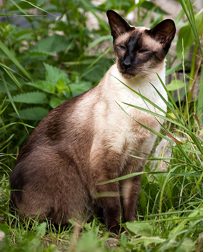
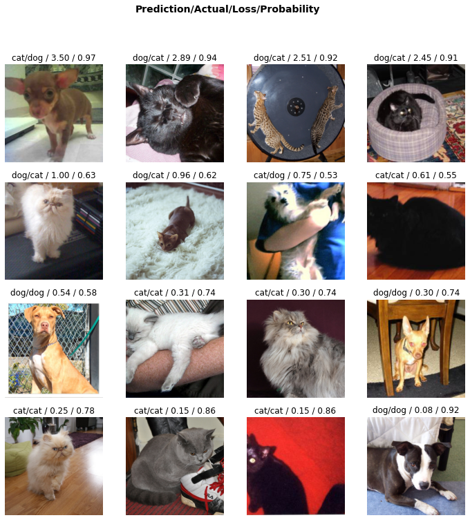

기계학습특강
_9월7일_ipynb의_사본_files/figure-html/cell-13-output-2.png)
/root/.fastai/data/oxford-iiit-pet/images/Egyptian_Mau_148.jpg/root/.fastai/data/oxford-iiit-pet/images/Siamese_79.jpg
ysj = cnn_learner(dls,resnet34,metrics=error_rate)
##저항률 확인(잘 파악하는지 확인하기 위해서 metrics=error_rate 이용)
ysj.fine_tune(1)
## 3을 쓰면 1보다는 많이 한다는 뜻
## 학습하다..동사,,/usr/local/lib/python3.7/dist-packages/fastai/vision/learner.py:284: UserWarning: `cnn_learner` has been renamed to `vision_learner` -- please update your code
warn("`cnn_learner` has been renamed to `vision_learner` -- please update your code")
/usr/local/lib/python3.7/dist-packages/torchvision/models/_utils.py:209: UserWarning: The parameter 'pretrained' is deprecated since 0.13 and will be removed in 0.15, please use 'weights' instead.
f"The parameter '{pretrained_param}' is deprecated since 0.13 and will be removed in 0.15, "
/usr/local/lib/python3.7/dist-packages/torchvision/models/_utils.py:223: UserWarning: Arguments other than a weight enum or `None` for 'weights' are deprecated since 0.13 and will be removed in 0.15. The current behavior is equivalent to passing `weights=ResNet34_Weights.IMAGENET1K_V1`. You can also use `weights=ResNet34_Weights.DEFAULT` to get the most up-to-date weights.
warnings.warn(msg)
Downloading: "https://download.pytorch.org/models/resnet34-b627a593.pth" to /root/.cache/torch/hub/checkpoints/resnet34-b627a593.pth| epoch | train_loss | valid_loss | error_rate | time |
|---|---|---|---|---|
| 0 | 0.147350 | 0.014042 | 0.004060 | 00:56 |
| epoch | train_loss | valid_loss | error_rate | time |
|---|---|---|---|---|
| 0 | 0.053051 | 0.012090 | 0.004736 | 00:52 |
ysj.predict(PILImage.create(faaaa[6])) #동사이고.. 뒤에 점찍었으니까 함수다 생각하기 # 입력을 이미지 자체로 넣었는데, 이미지가 저장된 path만 넣어도 되지않을까?
checker.plot_top_losses(16)
# 첫번째 사진에서 5.59는 로스이고 1퍼의 확률로 강아지라고 생각함
# 로스는 몇퍼의 확률로 잘못생각했느냐에 따라서 달라질 수 있음
# 맞추는 걸 넘어서 확실해야 로스가 적다. (확신의여부)
# 오버피팅 아냐..? 과대적합..? 자기들이 이미 다학습된 내용 가지고 보여주는거아냐? 생각->새로운 이미지 부여
img=PILImage.create(requests.get('https://dimg.donga.com/ugc/CDB/SHINDONGA/Article/5e/0d/9f/01/5e0d9f011a9ad2738de6.jpg').content)
ysj.predict(img)('dog', TensorBase(1), TensorBase([2.8106e-06, 1.0000e+00]))img=PILImage.create(requests.get('https://img1.daumcdn.net/thumb/R1280x0/?scode=mtistory2&fname=https%3A%2F%2Fblog.kakaocdn.net%2Fdn%2FcnSq1X%2Fbtq4o9AdWTH%2FHTm9TZG4AszSwLPFlVfGW0%2Fimg.jpg').content)
ysj.predict(img)('dog', TensorBase(1), TensorBase([1.0909e-06, 1.0000e+00]))img=PILImage.create(requests.get('https://image.edaily.co.kr/images/photo/files/NP/S/2022/04/PS22042501396.jpg').content)
ysj.predict(img)('cat', TensorBase(0), TensorBase([1.0000e+00, 2.6542e-12]))